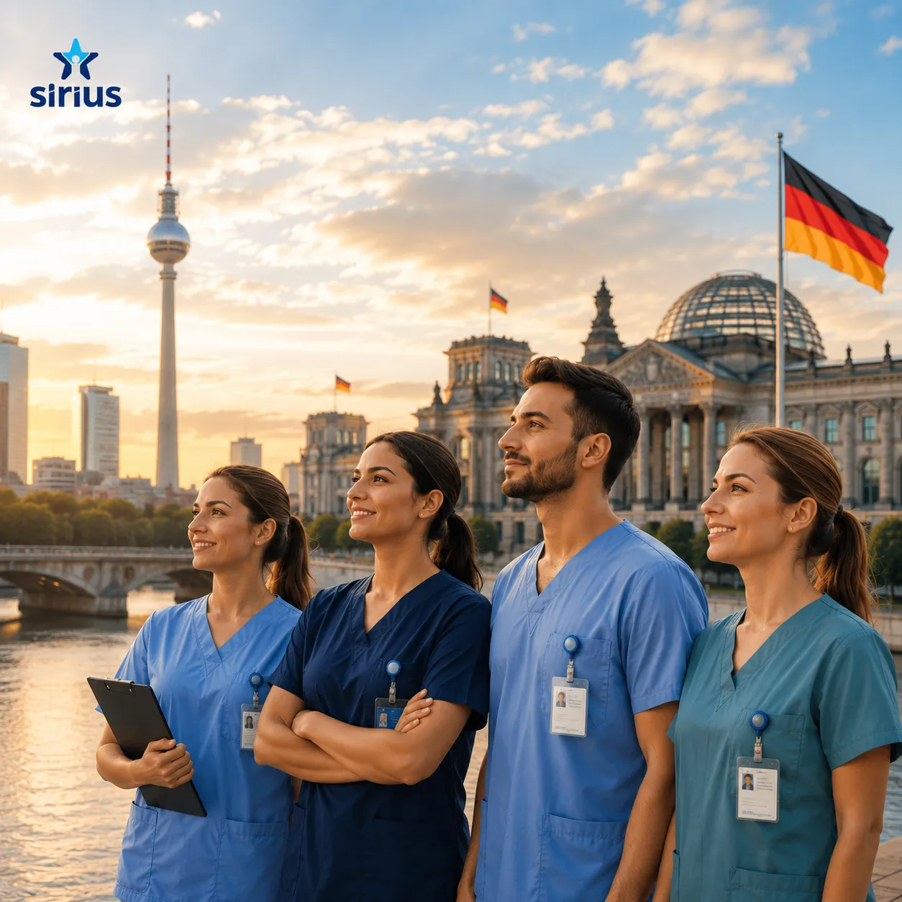

Sağlık Alanında Profesyoneller İçin Almanya'da Yeni Bir Kariyer, Muhteşem Gelecek
Sirius Medicare, Almanya genelinde var olan yetişmiş insan kaynağı ihtiyacının karşılanması amacıyla sağlık kurumları ile dünya genelindeki sağlık uzmanlarını buluşturan "uluslararası sektörel bir köprü"dür.
Sağlık alanında uzmanlaşmış güvenilir partneriniz olarak; halihazırda sağlık sektöründe kariyere sahip olan veya kariyerine sağlık alanında yeni bir başlangıç yapmak isteyen tüm adaylar için nitelikli Almanya istihdam fırsatları sunuyoruz.

Almanya Kariyerinize Profesyonel Bir Adım Atın
Siz de Almanya'da kendinize yeni ve güçlü bir yol çizmek mi istiyorsunuz?
Sağlık Diploması Yeterliliği
Ülkenizde tıp, hemşirelik, fizyoterapi veya sağlık teknikerliği alanında başarıyla tamamlanmış bir diplomanız mı var?
Sektörel Mesleki Tecrübe
Sağlık alanındaki eğitiminizin yanında klinik veya saha deneyiminiz de bulunuyor mu?
Uzman Danışman Desteği
Sirius Medicare uzman danışmanları mesleki tecrübenize ve kariyer hedeflerinize en uygun kurumsal işi bulmanızda yanınızda.
Bunun için yapmanız gereken tek şey sizin mesleki yeterliliklerinize uygun programı seçmek ve başvurunuzu tamamlamaktır.
Niteliklerinize Uygun Almanya Programını Seçin
Almanya Eyalet Sağlık Daireleri ve Hastaneler Birliği standartlarında branş bazlı profesyonel hizmet sunuyoruz.
1. Sirius Hemşirelik Mesleki Eğitimi
Sirius Medicare Servisi tarafından geliştirilen Hemşirelik Mesleki Eğitim Programı (Ausbildung), kariyer yolculuğuna sağlık sektöründe devam etmek isteyen hemşire adaylarına yönelik Almanya standartlarında mesleki eğitim ve maaşlı staj fırsatıdır.
2. Sirius Hemşire Yardımcılığı Eğitimi
Sirius Medicare Servisi tarafından geliştirilen Hemşire Yardımcılığı Mesleki Eğitim Programı, sağlık sektöründe hızlı ve güvenli bir kariyer başlangıcı yapmak isteyen tüm adaylara yönelik nitelikli mesleki eğitim fırsatıdır.
3. Sirius Hemşirelik (Diplomalı / Denklik)
Hemşirelik, Almanya istihdam piyasasında nitelikli personel açığının en fazla olduğu stratejik alanlardandır. Bu durum, yurtdışında diploması veya tecrübesi olan hemşireler için Almanya'da yüksek standartlı süresiz kariyer fırsatları sunar.
Süreç Nasıl İşliyor?
Sirius Medicare ile Almanya sağlık sektörüne ilk adımı attığınız andan klinik görevinize başlayana kadar tüm resmi iş süreçleri uzman ekibimiz tarafından yürütülür.
- B2 Genel & Tıbbi Almanca Dil Desteği (C1 FSP Desteği)
- Eyalet Sağlık Daireleri (Bezirksregierung) Mesleki Denklik İşlemleri
- Almanya Klinikleri ve Hastaneleri ile Doğrudan İş Sözleşmesi
- Vize, Karşılama ve Sirius Home Konaklama Rehberliği
